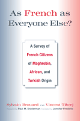

Shedding new light on integration and citizenship in France to reveal the ways in which immigrants do-and do not-share the attitudes of the majority population
Shedding new light on integration and citizenship in France to reveal the ways in which immigrants do-and do not-share the attitudes of the majority population


 Shedding new light on integration and citizenship in France to reveal the ways in which immigrants do-and do not-share the attitudes of the majority population
Shedding new light on integration and citizenship in France to reveal the ways in which immigrants do-and do not-share the attitudes of the majority population

|  |
As French As Everyone Else?A Survey of French Citizens of Maghrebin, African, and Turkish OriginForeword by Paul M. Sniderman Translated by Jennifer FredetteSylvain Brouard and Vincent Tiberjpaper EAN: 978-1-43990-296-7 (ISBN: 1-4399-0296-8) |
"As French as Everyone Else? is a timely, unique, and major contribution. Brouard and Tiberj—leading French political science researchers—offer a concise book on the important case of France. Given the relatively large size of the country’s immigrant population and its political and social significance, its study is especially relevant. These scholars examine in depth the cultural, political, and religious attitudes of this very important community. It is one about which little is known, in a scientific sense, until now."
—Michael Lewis-Beck, F. Wendell Miller Distinguished Professor of Political Science at the University of Iowa and author of How France Votes, The French Voter: Before and After the 2002 Elections, and French Presidential Elections
France is often depicted as the model of assimilationist or republican integration in the international literature on immigration. However, rarely have surveys drilled down to provide individual responses from a double representative sample. In As French as Everyone Else?, Sylvain Brouard and Vincent Tiberj provide a comprehensive assessment of the state of integration in France by systematically comparing the "new French" immigrants, as well as their children and grandchildren born in France, with a sample of the French general population.
The authors' survey considers a wide range of topics, including religious affiliation and religiosity, political attitudes and political efficacy, value systems (including gender roles, work ethics, and anti-Semitism), patterns of integration, multiple identities and national belongings, and affirmative action. As the authors show, despite existing differences, immigrants of Maghrebin, African, and Turkish origin share a wide scope of commonality with other French citizens
Excerpt available at www.temple.edu/tempress
Foreword to the English Edition, by Paul M. Sniderman
A Note on the Translation
Foreword to the French Edition, by Pascal Perrineau
Acknowledgements
Introduction: Why This Question?
1. Are the New French More Religious and Less Laïque?
All Muslims?
Are Muslims More Religious?
Can We Speak of a Re-Islamization in France?
Islam Is Not Part of a Retreat from French Society
Laïcité: A Danger to or Protection for Muslims?
Church and State Relations
2. Integration into the French Political System
Confidence in French Democracy
Political Preoccupations
A Commitment to the Left
Leftist Chiracians?
Religion and Political Orientation
3. A Welfare Culture?
Liberty or Equality
Acceptance of the Rules of the Economy
Attitudes toward the Role of the State
Work and Success
An Omnipresent Culture of Material Success
Immigration, a Culture of Success
4. Women, Mores, and Homosexuality
The Less Authoritarian French
A France That Is Uncertain about Moral Order
No More Lax, No More Authoritarian
The More Conservative French
A Lower Level of Sexual Permissiveness
A Lower Level of Permissiveness in Most Social Groups
Religion and Permissiveness
Consequences of Lower Sexual Tolerance: Exogamy and the Veil
5. Racism and Anti-Semitism
The Less Racist French
Origin Is Not the Explanation
Impact of the Economic Situation
“Anti-Semitism of the Suburbs” in Question
Anti-Semitism among Only a Minority, But a Larger Minority
Anti-Semitism of the New French
The Religious Factor
The Relationship between Anti-Zionism and Anti-Semitism: More Complex than Expected
6. Integration and Equal Opportunity
Assessment of and Vision for Integration
Support for Affirmative Action
Evaluation of Equal Opportunity Policie
7. What Identity/Identities?
Attachment to Country of Origin
Identification with the French
Racism, Identities, and Communautarisme
Minorities and Communautarisme: Danger or Fantasy?
Conclusion
Appendix: Methodology
Bibliography
Sylvain Brouard is FNSP Associate Research Professor at Bordeaux University, Sciences Po, Bordeaux, Center Emile Durkheim.
Vincent Tiberj is FNSP Associate Research Professor, Sciences Po, Center for European Studies.
Political Science and Public Policy
Sociology
Immigration Studies
© 2015 Temple University. All Rights Reserved. This page: http://www.temple.edu/tempress/titles/2103_reg.html.